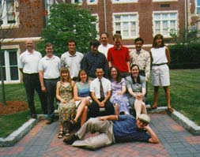
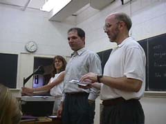
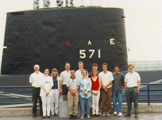

|  July, 1998 |
The People
|
Students
| Kristin Blenk University of Dayton, Dayton, Ohio Interests: Applied analysis and optimization |
|
| Ane Coughlin Bates College, Lewiston, Maine Interests: Applied analysis and differential equations |
|
| Duane Ellington Wake Forest University, Winston-Salem, NC Interests: Differential equations |
|
| Jesse Field University of North Texas, Denton, Texas Interests: Differential equations and applied analysis |
|
| Jon Kennedy Worcester Polytechnic Institute, Worcester, MA Interests: Computational and applied mathematics |
|
| Ellen Phifer Trinity University, San Antonio, Texas Interests: Applied analysis and optimization |
|
| Brian Rieksts Kutztown University, Kutztown, Pennsylvania Interests: Operations research and optimization |
|
| Heather Stultz Xavier University, Cincinnati, Ohio Interests: Applied statistics and Operations research |
|
| Peter Trautman Baylor Univeristy, Waco, Texas Interests: Differential equations |
|
| Jonathan Van Haste Calvin College, Grand Rapids, Michigan Interests: Applied analysis and optimization |
REU Assistant
| Jeffrey Spaleta Plasma Physics Princeton University |
Faculty
|  (From right and left) Arthur C. Heinricher, Mathematics Bogdan Vernescu, Mathematics Ann Wiedie, Mathematics |
Please visit the REU 1998 Projects page.
Talks
Field Trips

Please visit the Information page to learn about housing and meals.